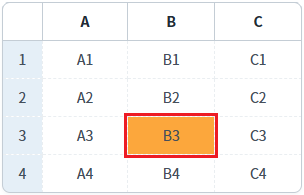
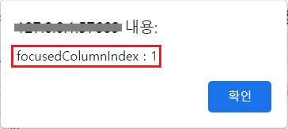
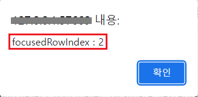

GridView의 'getFocusedColumnIndex' 메소드와 'getFocusedRowIndex' 메소드를 사용하여 선택된 열 또는 행의 인덱스를 반환받는 예제입니다.
다음은 예제에서 사용한 메소드와 설명입니다.
getFocusedColumnIndex: 포커스된 셀의 열 인덱스를 반환. 포커스된 열이 없으면 null이 반환됩니다.
getFocusedRowIndex: 포커스된 셀의 행 인덱스를 반환. 포커스된 행이 없으면 -1이 반환됩니다.
선택된 열의 인덱스 반환받기
선택된 행의 인덱스 반환받기
1
STEP 1: 초기 상태를 확인합니다.
GridView의 'B' 컬럼의 3번째 행이 선택된 상태입니다.
Image 1.브라우저(Chrome) 실행 예시

2
STEP 2: 선택된 열의 인덱스를 확인합니다.
'선택된 열의 인덱스 반환받기' 버튼을 클릭합니다.3
STEP 3: 실행된 결과를 확인합니다.
열의 인덱스가 브라우저 alert으로 출력됩니다. 출력 값 : 'focusedColumnIndex : 1'
Image 2.브라우저(Chrome) 실행 예시

1
STEP 1: 초기 상태를 확인합니다.
GridView의 'B' 컬럼의 3번째 행이 선택된 상태입니다.
Image 3.브라우저(Chrome) 실행 예시
2
STEP 2: 선택된 행의 인덱스를 확인합니다.
'선택된 행의 인덱스 반환받기' 버튼을 클릭합니다.3
STEP 3: 실행된 결과를 확인합니다.
행의 인덱스가 브라우저 alert으로 출력됩니다. 출력 값 : 'focusedRowIndex : 2'

GridView의 'getFocusedColumnIndex' 메소드를 사용하여 스크립트를 작성합니다. 세부 설정은 아래의 스크립트 예시에 작성되어 있습니다.
Example 1.Script
//예제 파일에서는 스크립트 scwin.btn_exam1_1_onclick에 작성되어 있습니다. // GridView 'grd_exam'의 선택된 열의 Index를 반환 받습니다. // 선택된 열이 없으면 null이 반환됩니다. var colIndex = grd_exam.getFocusedColumnIndex();
GridView의 'getFocusedRowIndex' 메소드를 사용하여 스크립트를 작성합니다. 세부 설정은 아래의 스크립트 예시에 작성되어 있습니다.
Example 2.Script
//예제 파일에서는 스크립트 scwin.btn_exam1_2_onclick에 작성되어 있습니다. // GridView 'grd_exam'의 선택된 행의 Index를 반환 받습니다. // 선택된 행이 없으면 -1이 반환됩니다. var rowIndex = grd_exam.getFocusedRowIndex();
getFocusedColumnIndex( )
getFocusedRowIndex( )
getFocusedColumnID( )
getFocusedRowStatus( )
removeFocusedCell( )